2.) Once the Command Prompt is open, you simply need to type "Diskpart" and hit enter.

This should open a new Command Prompt window called diskpart.exe
Please note that the reformatting of any said drive or SD card will delete any data off said drive/SD Card and could result in the loss of data. To avoid the potential loss of any important files - please relocate said files to a backup drive or repository.
This First Method describes how to reformat your SD card using Windows Explorer and is the simplest of the two to complete.
1.) First Identify the SD card you plan to reformat (This should be available in "This PC" and you should be cautious of selecting the correct Drive/Device as formatting will clear all data off said drive).
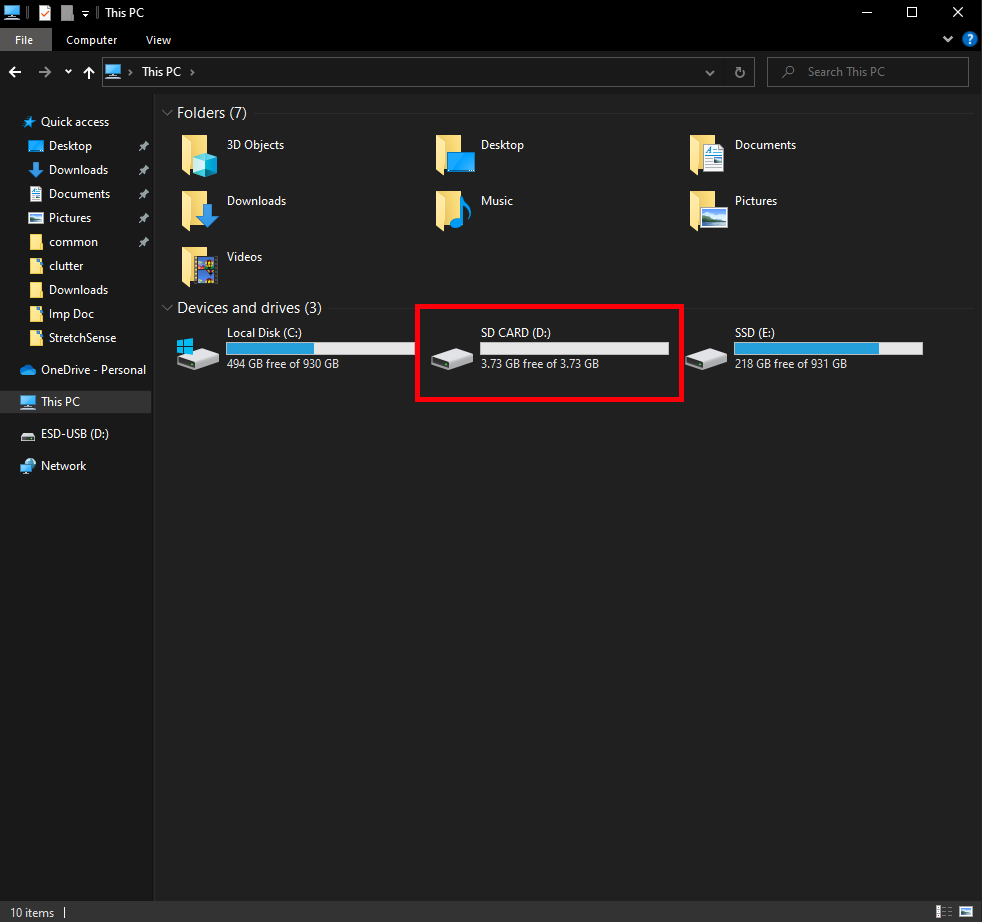
2.) You should then right-click on said Drive/SD Card and select "Format...". 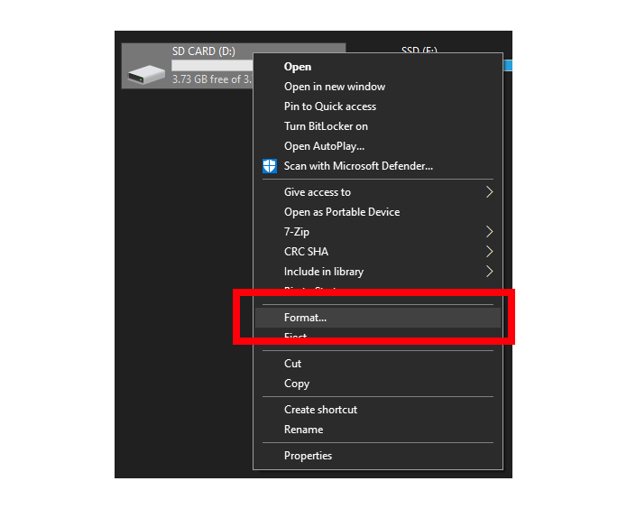
3.) This should open the Format Window which is where you can now reformat the SD Card to FAT32 which you can select from the highlighted drop down menu in the figure below. 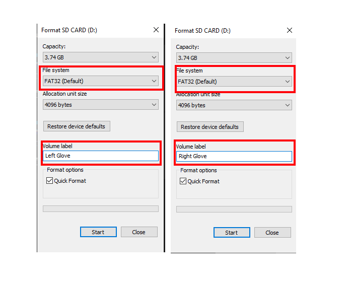
We also recommend changing the Volume Label of the SD card to something more descriptive as seen in the figure above, where I have renamed each SD card to their corresponding glove.
The only other setting I recommend you change is "Quick Format" which I have turned on as it speeds up the reformatting process dramatically.
Once happy with the Volume Label and File System, select Start on the bottom of the window, your SD card should now be renamed to your specified name and the drive should be reformatted to FAT32 meaning it's ready for recording and storing hand data.
You may find that option 1 is met with limited success, this may be to with the SD Card's current partitions which this option will demonstrate how to clear using Diskpart on a user's System Command Line.
This Option will allow you to clear the SD Card in question's partitions, so it can then be reformatted to FAT32 via Option 1.
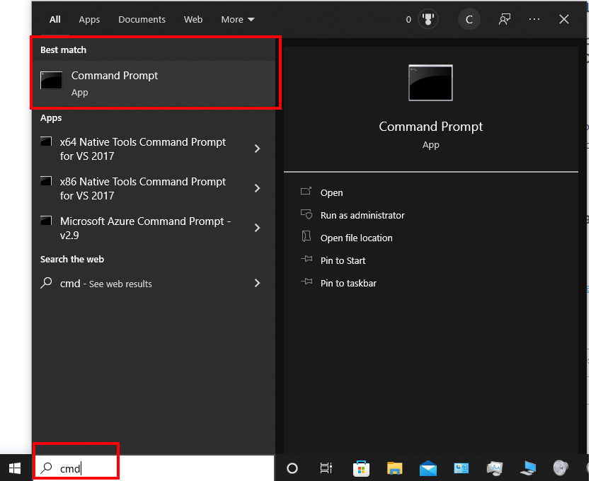
1.) Press the Windows key or simply click on the Windows logo at the bottom left of your desktop to access the start menu and search "cmd" and select Command Prompt.
This will have opened your system's Command Prompt.
2.) Once the Command Prompt is open, you simply need to type "Diskpart" and hit enter.
This should open a new Command Prompt window called diskpart.exe
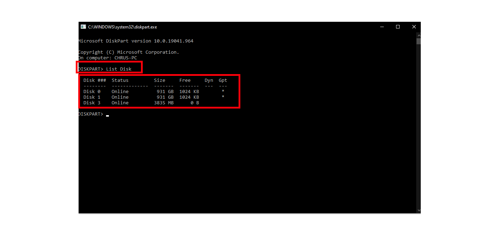
3.) You should now type "List Disk" in this newly opened window which should list all drives/disks present on the operating system.
You should note that even if you have renamed the SD card or drive prior to this point that its designated name will not appear here. You will need find another way of identifying the SD Card (Such as the Size of the drive).
Note that it is important to select the correct drive here as deleting partitions in a drive will delete the data stored on said partition.
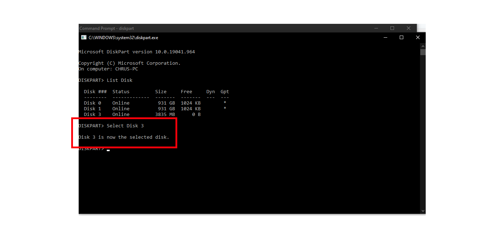 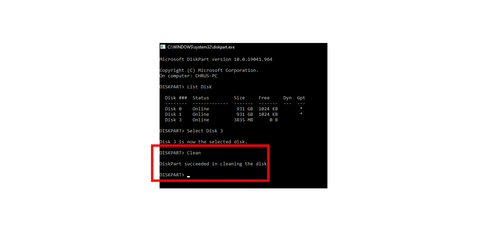 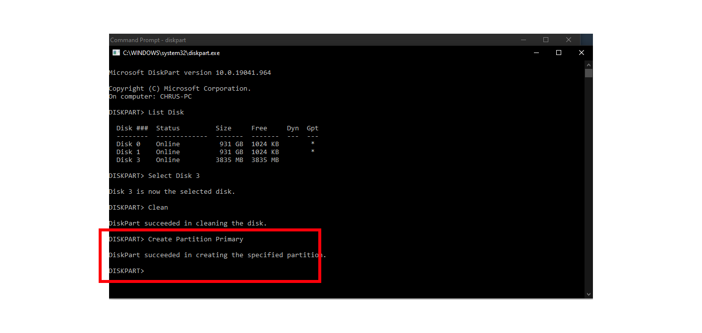
4.) Once you have identified the correct disk (the one that corresponds with the SD card you are trying to reformat) you should type "Select Disk #" (Where # is the disk number of the target drive/SD Card)
5.) You should then type "Clean" to remove all disk partitions off the selected drive
Once the command prompt reads that it "succeeded in creating the specified partition", you can now go back to Option 1 which details how to reformat a drive/SD Card to FAT32, which will then allow you to record data using the SD card/cards you're using with the MoCap Pro Gloves.
It may the case that the SD Card in question is on "Read only" meaning we can't write or record any data onto said SD Card.
This is fairly simple to work around and we can use Diskpart to remove this restriction.
1.) Press the Windows key or simply click on the Windows logo at the bottom left of your desktop to access the start menu and search "cmd" and select Command Prompt.

This will have opened your system's Command Prompt.
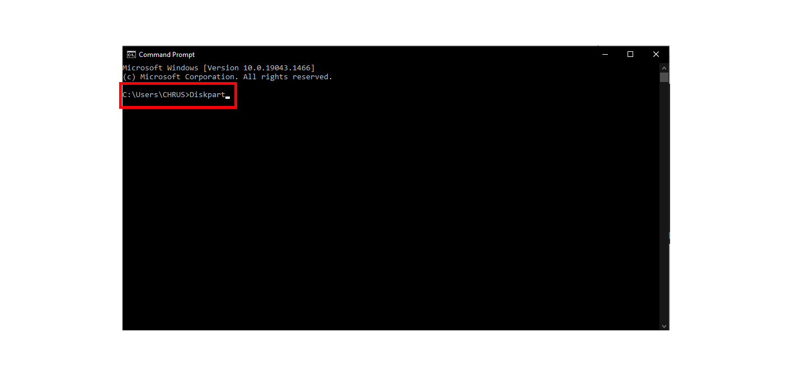
2.) Once the Command Prompt is open, you simply need to type "Diskpart" and hit enter.
This should open a new Command Prompt window called diskpart.exe
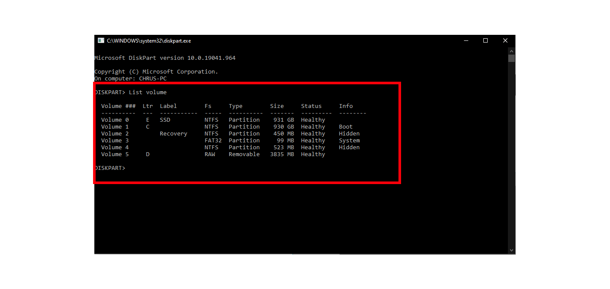
3.) You should now type "List Volume" you should now be able to see all connected drives, and should the identify which one is the SD Card drive.
You should note that even if they have renamed the SD card or drive prior to this point, that its designated name will not appear here. You will need find another way of identifying the SD Card (Such as the Size of the drive).
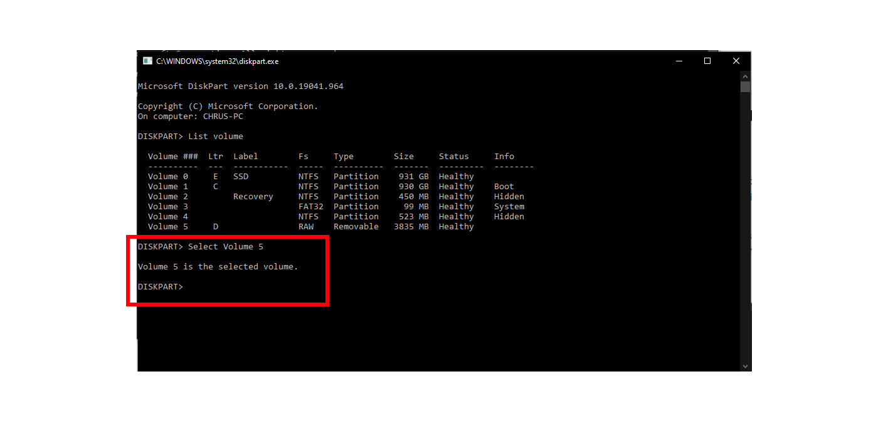
4.) Once you have identified the correct volume (the one that corresponds with the SD card you are trying to remove Read Only from) you should type "Select Volume #" (Where # is the volume number of the target drive/SD Card)
5.) Type "attributes disk clear readonly" which should change your SD card from read-only, and you should now be able to write to and record data on the SD Card.